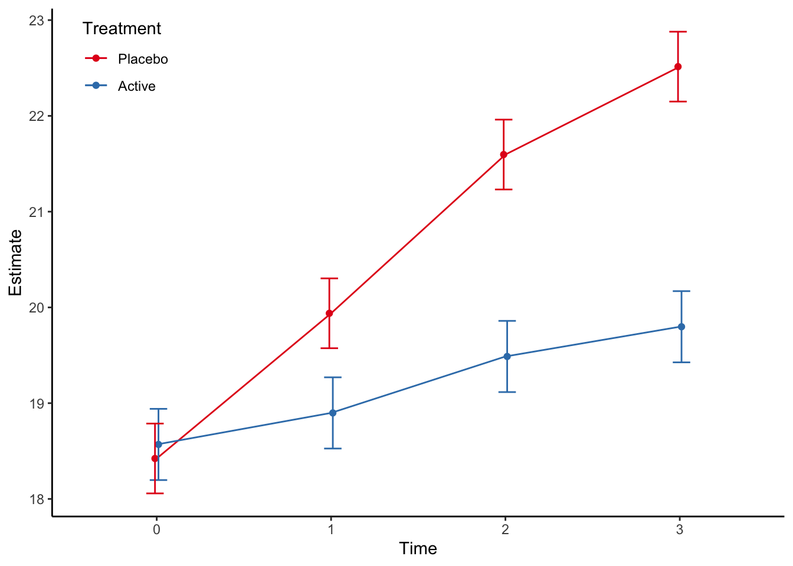

Chapter 3 Continuous endpoints
3.1 Single follow-up
When the outcome consists of a single follow-up assessment of the continuous endpoint, the main method I use is Analysis of Covariance. According to the EMAs Guideline on adjustment for baseline covariates in clinical trials we should adjust for site in multicentre trial, any stratification factors in the randomisation in addition to pre-specified covariates with evidence of strong or moderate association between the covariate and the primary outcome measure. Usually this also means the baseline observation of the outcome. In our simulated data set this means to adjust for site, contbl and covar variables. In this example we define that the primary outcome is the continuous outcome at time 3.
3.1.1 Stata code
use "stata/rct", clear
regress contout i.trt i.site covar contbl if time==3##
## . use "stata/rct", cle(all strata combined)
##
## . regress contout i.trt i.site covar contbl if time==3
##
## Source | SS df MS Number of obs = 98
## -------------+---------------------------------- F(6, 91) = 67.55
## Model | 454.530038 6 75.7550064 Prob > F = 0.0000
## Residual | 102.049964 91 1.12142818 R-squared = 0.8166
## -------------+---------------------------------- Adj R-squared = 0.8046
## Total | 556.580002 97 5.73793817 Root MSE = 1.059
##
## ------------------------------------------------------------------------------
## contout | Coef. Std. Err. t P>|t| [95% Conf. Interval]
## -------------+----------------------------------------------------------------
## trt |
## Active | -2.768593 .2162162 -12.80 0.000 -3.198079 -2.339106
## |
## site |
## 2 | .0464146 .3171924 0.15 0.884 -.5836491 .6764783
## 3 | .194252 .2832692 0.69 0.495 -.3684276 .7569315
## 4 | .7040756 .3356689 2.10 0.039 .0373106 1.370841
## |
## covar | .5580744 .0882877 6.32 0.000 .3827017 .7334471
## contbl | .3812488 .0813377 4.69 0.000 .2196815 .5428161
## _cons | 12.60568 1.165712 10.81 0.000 10.29013 14.92122
## ------------------------------------------------------------------------------
##
## .Note that we here looked at the outcome at time 3 as the primary outcome. It does not matter if we use this or the change from baseline to time 3, due to the baseline adjustment:
use stata/rct, clear
gen diff = contout - contbl
regress diff i.trt i.site covar contbl if time==3##
## . use stata/rct, cle(all strata combined)
##
## . gen diff = contout - contbl
##
## . regress diff i.trt i.site covar contbl if time==3
##
## Source | SS df MS Number of obs = 98
## -------------+---------------------------------- F(6, 91) = 40.55
## Model | 272.859876 6 45.476646 Prob > F = 0.0000
## Residual | 102.049964 91 1.12142818 R-squared = 0.7278
## -------------+---------------------------------- Adj R-squared = 0.7099
## Total | 374.90984 97 3.8650499 Root MSE = 1.059
##
## ------------------------------------------------------------------------------
## diff | Coef. Std. Err. t P>|t| [95% Conf. Interval]
## -------------+----------------------------------------------------------------
## trt |
## Active | -2.768593 .2162162 -12.80 0.000 -3.198079 -2.339106
## |
## site |
## 2 | .0464146 .3171924 0.15 0.884 -.5836491 .6764783
## 3 | .194252 .2832692 0.69 0.495 -.3684276 .7569315
## 4 | .7040756 .3356689 2.10 0.039 .0373106 1.370841
## |
## covar | .5580744 .0882877 6.32 0.000 .3827017 .7334471
## contbl | -.6187512 .0813377 -7.61 0.000 -.7803185 -.4571839
## _cons | 12.60568 1.165712 10.81 0.000 10.29013 14.92122
## ------------------------------------------------------------------------------
##
## .We see that the only difference is that the baseline parameter estimate shifts with one unit.
3.1.2 R code
rct <- read_dta("stata/rct.dta") %>%
modify_at(c("trt","catout"), haven::as_factor, levels = "labels") %>%
modify_at(c("site","time"), haven::as_factor)
rct %>%
filter(time==3) %>%
lm(contout ~ trt + site + covar + contbl, data=.) %>%
summary##
## Call:
## lm(formula = contout ~ trt + site + covar + contbl, data = .)
##
## Residuals:
## Min 1Q Median 3Q Max
## -2.35594 -0.68326 0.00278 0.73595 1.98465
##
## Coefficients:
## Estimate Std. Error t value Pr(>|t|)
## (Intercept) 12.60568 1.16571 10.814 < 2e-16 ***
## trtActive -2.76859 0.21622 -12.805 < 2e-16 ***
## site2 0.04641 0.31719 0.146 0.8840
## site3 0.19425 0.28327 0.686 0.4946
## site4 0.70408 0.33567 2.098 0.0387 *
## covar 0.55807 0.08829 6.321 9.46e-09 ***
## contbl 0.38125 0.08134 4.687 9.68e-06 ***
## ---
## Signif. codes: 0 '***' 0.001 '**' 0.01 '*' 0.05 '.' 0.1 ' ' 1
##
## Residual standard error: 1.059 on 91 degrees of freedom
## Multiple R-squared: 0.8166, Adjusted R-squared: 0.8046
## F-statistic: 67.55 on 6 and 91 DF, p-value: < 2.2e-16We see that the parameter estimates are identical.
3.1.3 Reporting
According to the CONSORT Statement item 17a: > For each outcome, study results should be reported as a summary of the outcome in each group (for example, the number of participants with or without the event and the denominators, or the mean and standard deviation of measurements), together with the contrast between the groups, known as the effect size.
For the single follow-up we present the mean and standard deviaiton for the outcome in addition to the effect size at follow-up (time 3). There is some coding to get the format right, but the nice thing is that the table could be pasted directly into the article. There are many ways to program this, the below example is one way.
#Two functions to produce the mean (sd) and est (lci to uci) output--------------------
get_meansd <- function(m, s, d=2){
paste(round(m, digits=d)," (",round(s,digits=d),")")
}
get_estci <- function(e, l, u, d=2){
paste(round(e, digits=d), " (", round(l, digits=d), " to ", round(u, digits=d),")")
}
# Compile the summary measures---------------------------------------------------------
single_cont_sum <- rct %>%
group_by(trt) %>%
filter(time==3) %>%
select(contout, trt) %>%
summarise_all(list(~mean(.),~sd(.))) %>%
mutate(txt1=get_meansd(mean,sd)) %>%
select(trt,txt1) %>%
spread(key=trt,value=txt1)
# Compile the estimates --------------------------------------------------------------
single_cont_est <- rct %>%
filter(time==3) %>%
lm(contout ~ trt + site + covar + contbl, data=.) %>%
tidy(conf.int=TRUE) %>%
filter(term=="trtActive") %>%
mutate(txt2=get_estci(estimate,conf.low,conf.high)) %>%
select(term,txt2)
# Combine and produce the table -----------------------------------------------------
single_cont_sum %>%
bind_cols(single_cont_est) %>%
mutate(txt="Outcome at time 3, mean (sd)") %>%
select(txt,Active, Placebo, txt2) %>%
kable(col.names=c("Outcome", "Active", "Placebo", "Effect size with 95% confidence limits"))| Outcome | Active | Placebo | Effect size with 95% confidence limits |
|---|---|---|---|
| Outcome at time 3, mean (sd) | 19.88 ( 2.05 ) | 22.3 ( 2.09 ) | -2.77 ( -3.2 to -2.34 ) |
3.2 Repeated follow-up
When the measurements are repeated, I usually use mixed models to model the data. The challenge with mixed models is that the effect size can be estimated in several ways, depending on the model specification.
3.2.1 Simple model
The simplest model is a model with random intercept and treatment, time and other baseline covariates as fixed effects.
\[ Y_{ij} = \mu_j + A_i + \mu_{trt} + \mu_{strat} + a_1 X_1 + \epsilon_{ij} \]
where \(Y_{ij}\) is the contiuous outcome for individual \(i\) at time \(j\), \(\mu_j\) is the overall mean at time \(j\), \(A_i\) is the random intercept for individual \(i\), \(\mu_{trt}\) is the mean treatment effect, \(\mu_{strat}\) is the mean effect of strata, \(a_1\) is the slope parameter of baseline covariate \(X_1\), and \(\epsilon_{ij}\) is the residual. The expression is sloppy, but should be readable.
In Stata, this model is coded as
use stata/rct, clear
mixed contout i.trt i.site i.time covar || pid: ##
## . use stata/rct, cle(all strata combined)
##
## . mixed contout i.trt i.site i.time covar || pid:
##
## Performing EM optimization:
##
## Performing gradient-based optimization:
##
## Iteration 0: log likelihood = -657.45638
## Iteration 1: log likelihood = -657.45638
##
## Computing standard errors:
##
## Mixed-effects ML regression Number of obs = 392
## Group variable: pid Number of groups = 98
##
## Obs per group:
## min = 4
## avg = 4.0
## max = 4
##
## Wald chi2(8) = 668.05
## Log likelihood = -657.45638 Prob > chi2 = 0.0000
##
## ------------------------------------------------------------------------------
## contout | Coef. Std. Err. z P>|z| [95% Conf. Interval]
## -------------+----------------------------------------------------------------
## trt |
## Active | -1.429745 .1959578 -7.30 0.000 -1.813815 -1.045675
## |
## site |
## 2 | .6526838 .2761648 2.36 0.018 .1114107 1.193957
## 3 | .5751011 .2484525 2.31 0.021 .0881431 1.062059
## 4 | .9060635 .2962487 3.06 0.002 .3254268 1.4867
## |
## time |
## 1 | .9346939 .1621317 5.77 0.000 .6169216 1.252466
## 2 | 2.069388 .1621317 12.76 0.000 1.751615 2.38716
## 3 | 2.689796 .1621317 16.59 0.000 2.372024 3.007568
## |
## covar | .8633823 .0519317 16.63 0.000 .761598 .9651666
## _cons | 14.55194 .3117202 46.68 0.000 13.94098 15.1629
## ------------------------------------------------------------------------------
##
## ------------------------------------------------------------------------------
## Random-effects Parameters | Estimate Std. Err. [95% Conf. Interval]
## -----------------------------+------------------------------------------------
## pid: Identity |
## var(_cons) | .6013744 .1345595 .3878697 .9324039
## -----------------------------+------------------------------------------------
## var(Residual) | 1.288047 .1062364 1.095786 1.514041
## ------------------------------------------------------------------------------
## LR test vs. linear model: chibar2(01) = 46.95 Prob >= chibar2 = 0.0000
##
## .In R this the model is coded as
rct %>%
lmer(contout ~ trt + site + time + covar + (1|pid),data=., REML=FALSE) %>%
summary(correlation=FALSE)## Linear mixed model fit by maximum likelihood ['lmerMod']
## Formula: contout ~ trt + site + time + covar + (1 | pid)
## Data: .
##
## AIC BIC logLik deviance df.resid
## 1336.9 1380.6 -657.5 1314.9 381
##
## Scaled residuals:
## Min 1Q Median 3Q Max
## -3.4684 -0.5939 0.0717 0.6466 2.4636
##
## Random effects:
## Groups Name Variance Std.Dev.
## pid (Intercept) 0.6014 0.7755
## Residual 1.2880 1.1349
## Number of obs: 392, groups: pid, 98
##
## Fixed effects:
## Estimate Std. Error t value
## (Intercept) 14.55194 0.31172 46.683
## trtActive -1.42975 0.19596 -7.296
## site2 0.65268 0.27616 2.363
## site3 0.57510 0.24845 2.315
## site4 0.90606 0.29625 3.058
## time1 0.93469 0.16213 5.765
## time2 2.06939 0.16213 12.764
## time3 2.68980 0.16213 16.590
## covar 0.86338 0.05193 16.625Note that we need to specify “REML=FALSE” to produce Maximum Likelihood estimates to be consistent with the Stata estimates.
This is clearly not a good model since it assumes that the treatment effect is the same at all timepoints (including baseline). Since we should assume no treatment difference at baseline, the model is clearly wrong. We see this when we plot the model estimates through the “margins” and “marginsplot” procedures in Stata, and the “margins”-package in R. The “margins”-package is a port from Stata.
use stata/rct, clear
mixed contout i.trt i.site i.time covar || pid:
*Compute the marginal estimates by time and treatment
margins time#trt
*Plot the marginal estimates. Note that the arguments after the comma is just to prettify the plot.
marginsplot, graphregion(color(white)) graphregion(color(white)) plotregion(color(white)) ytitle("Marginal estimates") ylabel(,nogrid) legend(region(color(none) lstyle(none)) cols(1) ring(0) bplacement(nwest)) title("")
graph export stata/figures/cont_fig1.pdf, replace ##
## . use stata/rct, cle(all strata combined)
##
## . mixed contout i.trt i.site i.time covar || pid:
##
## Performing EM optimization:
##
## Performing gradient-based optimization:
##
## Iteration 0: log likelihood = -657.45638
## Iteration 1: log likelihood = -657.45638
##
## Computing standard errors:
##
## Mixed-effects ML regression Number of obs = 392
## Group variable: pid Number of groups = 98
##
## Obs per group:
## min = 4
## avg = 4.0
## max = 4
##
## Wald chi2(8) = 668.05
## Log likelihood = -657.45638 Prob > chi2 = 0.0000
##
## ------------------------------------------------------------------------------
## contout | Coef. Std. Err. z P>|z| [95% Conf. Interval]
## -------------+----------------------------------------------------------------
## trt |
## Active | -1.429745 .1959578 -7.30 0.000 -1.813815 -1.045675
## |
## site |
## 2 | .6526838 .2761648 2.36 0.018 .1114107 1.193957
## 3 | .5751011 .2484525 2.31 0.021 .0881431 1.062059
## 4 | .9060635 .2962487 3.06 0.002 .3254268 1.4867
## |
## time |
## 1 | .9346939 .1621317 5.77 0.000 .6169216 1.252466
## 2 | 2.069388 .1621317 12.76 0.000 1.751615 2.38716
## 3 | 2.689796 .1621317 16.59 0.000 2.372024 3.007568
## |
## covar | .8633823 .0519317 16.63 0.000 .761598 .9651666
## _cons | 14.55194 .3117202 46.68 0.000 13.94098 15.1629
## ------------------------------------------------------------------------------
##
## ------------------------------------------------------------------------------
## Random-effects Parameters | Estimate Std. Err. [95% Conf. Interval]
## -----------------------------+------------------------------------------------
## pid: Identity |
## var(_cons) | .6013744 .1345595 .3878697 .9324039
## -----------------------------+------------------------------------------------
## var(Residual) | 1.288047 .1062364 1.095786 1.514041
## ------------------------------------------------------------------------------
## LR test vs. linear model: chibar2(01) = 46.95 Prob >= chibar2 = 0.0000
##
## .
## . *Compute the marginal estimates by time and treatment
##
## .
## . margins time#trt
##
## Predictive margins Number of obs = 392
##
## Expression : Linear prediction, fixed portion, predict()
##
## ------------------------------------------------------------------------------
## | Delta-method
## | Margin Std. Err. z P>|z| [95% Conf. Interval]
## -------------+----------------------------------------------------------------
## time#trt |
## 0#Placebo | 19.12477 .1687953 113.30 0.000 18.79394 19.45561
## 0#Active | 17.69503 .1711009 103.42 0.000 17.35968 18.03038
## 1#Placebo | 20.05947 .1687953 118.84 0.000 19.72863 20.3903
## 1#Active | 18.62972 .1711009 108.88 0.000 18.29437 18.96507
## 2#Placebo | 21.19416 .1687953 125.56 0.000 20.86333 21.52499
## 2#Active | 19.76442 .1711009 115.51 0.000 19.42906 20.09977
## 3#Placebo | 21.81457 .1687953 129.24 0.000 21.48374 22.1454
## 3#Active | 20.38482 .1711009 119.14 0.000 20.04947 20.72018
## ------------------------------------------------------------------------------
##
## .
## . *Plot the marginal estimates. Note that the arguments after the comma is just
## > to prettify the plot.
##
## .
## . marginsplot, graphregion(color(white)) graphregion(color(white)) plotregion(c
## > olor(white)) ytitle("Marginal estimates") ylabel(,nogrid) legend(region(colo
## > r(none) lstyle(none)) cols(1) ring(0) bplacement(nwest)) title("")
##
## Variables that uniquely identify margins: time trt
##
## . graph export stata/figures/cont_fig1.pdf, replace
## (file stata/figures/cont_fig1.pdf written in PDF format)
##
## .knitr::include_graphics("stata/figures/cont_fig1.pdf")Figure 3.1: Simple mixed model marginal plot from Stata
We will show how to code this in R below. The code is similar.
3.2.2 Model with treatment-time interaction
A better solution would be to add a treatment-time interaction to the mixed model to loosen the assumption that the treatment effect is equal across time.
In Stata, the model is coded as:
use stata/rct, clear
mixed contout i.trt i.time i.trt#i.time i.site covar || pid: ##
## . use stata/rct, cle(all strata combined)
##
## . mixed contout i.trt i.time i.trt#i.time i.site covar || pid:
##
## Performing EM optimization:
##
## Performing gradient-based optimization:
##
## Iteration 0: log likelihood = -603.47362
## Iteration 1: log likelihood = -603.47362
##
## Computing standard errors:
##
## Mixed-effects ML regression Number of obs = 392
## Group variable: pid Number of groups = 98
##
## Obs per group:
## min = 4
## avg = 4.0
## max = 4
##
## Wald chi2(11) = 943.21
## Log likelihood = -603.47362 Prob > chi2 = 0.0000
##
## ------------------------------------------------------------------------------
## contout | Coef. Std. Err. z P>|z| [95% Conf. Interval]
## -------------+----------------------------------------------------------------
## trt |
## Active | .1464841 .2563632 0.57 0.568 -.3559785 .6489468
## |
## time |
## 1 | 1.516 .1889091 8.03 0.000 1.145745 1.886255
## 2 | 3.174 .1889091 16.80 0.000 2.803745 3.544255
## 3 | 4.092 .1889091 21.66 0.000 3.721745 4.462255
## |
## trt#time |
## Active#1 | -1.186833 .2699264 -4.40 0.000 -1.715879 -.6577872
## Active#2 | -2.25525 .2699264 -8.36 0.000 -2.784296 -1.726204
## Active#3 | -2.862833 .2699264 -10.61 0.000 -3.391879 -2.333787
## |
## site |
## 2 | .6526838 .2761649 2.36 0.018 .1114106 1.193957
## 3 | .5751011 .2484525 2.31 0.021 .0881431 1.062059
## 4 | .9060635 .2962487 3.06 0.002 .3254267 1.4867
## |
## covar | .8633823 .0519317 16.63 0.000 .761598 .9651666
## _cons | 13.77991 .3173239 43.43 0.000 13.15796 14.40185
## ------------------------------------------------------------------------------
##
## ------------------------------------------------------------------------------
## Random-effects Parameters | Estimate Std. Err. [95% Conf. Interval]
## -----------------------------+------------------------------------------------
## pid: Identity |
## var(_cons) | .7003448 .1331889 .4824292 1.016694
## -----------------------------+------------------------------------------------
## var(Residual) | .8921667 .0735847 .758997 1.048702
## ------------------------------------------------------------------------------
## LR test vs. linear model: chibar2(01) = 87.90 Prob >= chibar2 = 0.0000
##
## .In R this model is coded as
rct %>%
lmer(contout ~ trt + time + trt*time + site + covar + (1|pid),data=., REML=FALSE) %>%
summary(correlation=FALSE)## Linear mixed model fit by maximum likelihood ['lmerMod']
## Formula: contout ~ trt + time + trt * time + site + covar + (1 | pid)
## Data: .
##
## AIC BIC logLik deviance df.resid
## 1234.9 1290.5 -603.5 1206.9 378
##
## Scaled residuals:
## Min 1Q Median 3Q Max
## -3.6736 -0.5555 0.0171 0.6023 2.4871
##
## Random effects:
## Groups Name Variance Std.Dev.
## pid (Intercept) 0.7003 0.8369
## Residual 0.8922 0.9445
## Number of obs: 392, groups: pid, 98
##
## Fixed effects:
## Estimate Std. Error t value
## (Intercept) 13.77991 0.31732 43.425
## trtActive 0.14648 0.25636 0.571
## time1 1.51600 0.18891 8.025
## time2 3.17400 0.18891 16.802
## time3 4.09200 0.18891 21.661
## site2 0.65268 0.27616 2.363
## site3 0.57510 0.24845 2.315
## site4 0.90606 0.29625 3.058
## covar 0.86338 0.05193 16.625
## trtActive:time1 -1.18683 0.26993 -4.397
## trtActive:time2 -2.25525 0.26993 -8.355
## trtActive:time3 -2.86283 0.26993 -10.606The problem with the results as presented both by Stata and R is that they are difficult to interpret. The solution is to use predictive margins and corresponding marginal plots. First we plot the predictive margins by treatment:
use stata/rct, clear
quietly mixed contout i.trt i.time i.trt#i.time i.site covar || pid:
*Compute the predictive margins by time and treatment
margins time#trt
*Plot the predictive margins. Note that the arguments after the comma is just to prettify the plot.
marginsplot, graphregion(color(white)) graphregion(color(white)) plotregion(color(white)) ytitle("Marginal estimates") ylabel(,nogrid) legend(region(color(none) lstyle(none)) cols(1) ring(0) bplacement(nwest)) title("")
graph export stata/figures/cont_fig2.pdf, replace ##
## . use stata/rct, cle(all strata combined)
##
## . quietly mixed contout i.trt i.time i.trt#i.time i.site covar || pid:
##
## .
## . *Compute the predictive margins by time and treatment
##
## .
## . margins time#trt
##
## Predictive margins Number of obs = 392
##
## Expression : Linear prediction, fixed portion, predict()
##
## ------------------------------------------------------------------------------
## | Delta-method
## | Margin Std. Err. z P>|z| [95% Conf. Interval]
## -------------+----------------------------------------------------------------
## time#trt |
## 0#Placebo | 18.35274 .1789325 102.57 0.000 18.00204 18.70344
## 0#Active | 18.49923 .182642 101.29 0.000 18.14125 18.8572
## 1#Placebo | 19.86874 .1789325 111.04 0.000 19.51804 20.21944
## 1#Active | 18.82839 .182642 103.09 0.000 18.47042 19.18637
## 2#Placebo | 21.52674 .1789325 120.31 0.000 21.17604 21.87744
## 2#Active | 19.41798 .182642 106.32 0.000 19.06 19.77595
## 3#Placebo | 22.44474 .1789325 125.44 0.000 22.09404 22.79544
## 3#Active | 19.72839 .182642 108.02 0.000 19.37042 20.08637
## ------------------------------------------------------------------------------
##
## .
## . *Plot the predictive margins. Note that the arguments after the comma is just
## > to prettify the plot.
##
## .
## . marginsplot, graphregion(color(white)) graphregion(color(white)) plotregion(c
## > olor(white)) ytitle("Marginal estimates") ylabel(,nogrid) legend(region(colo
## > r(none) lstyle(none)) cols(1) ring(0) bplacement(nwest)) title("")
##
## Variables that uniquely identify margins: time trt
##
## . graph export stata/figures/cont_fig2.pdf, replace
## (file stata/figures/cont_fig2.pdf written in PDF format)
##
## .knitr::include_graphics("stata/figures/cont_fig2.pdf")Figure 3.2: Margins plot by Stata
From this we can estimate the treatment difference at the different timepoints:
use stata/rct, clear
quietly mixed contout i.trt i.time i.trt#i.time i.site covar || pid:
*Compute the marginal treatment differences
margins time, dydx(trt)##
## . use stata/rct, cle(all strata combined)
##
## . quietly mixed contout i.trt i.time i.trt#i.time i.site covar || pid:
##
## .
## . *Compute the marginal treatment differences
##
## .
## . margins time, dydx(trt)
##
## Average marginal effects Number of obs = 392
##
## Expression : Linear prediction, fixed portion, predict()
## dy/dx w.r.t. : 1.trt
##
## ------------------------------------------------------------------------------
## | Delta-method
## | dy/dx Std. Err. z P>|z| [95% Conf. Interval]
## -------------+----------------------------------------------------------------
## 0.trt | (base outcome)
## -------------+----------------------------------------------------------------
## 1.trt |
## time |
## 0 | .1464841 .2563632 0.57 0.568 -.3559785 .6489468
## 1 | -1.040349 .2563632 -4.06 0.000 -1.542812 -.5378865
## 2 | -2.108766 .2563632 -8.23 0.000 -2.611229 -1.606303
## 3 | -2.716349 .2563632 -10.60 0.000 -3.218812 -2.213887
## ------------------------------------------------------------------------------
## Note: dy/dx for factor levels is the discrete change from the base level.
##
## .This can also be achieved in R by:
trt_margins <- rct %>%
lmer(contout ~ trt + time + trt*time + site + covar + (1|pid),data=., REML=FALSE) %>%
margins(model = .,variables = "trt", at= list(time=c("0","1","2", "3")), vce = "delta") %>%
summary()
as_tibble(trt_margins)## # A tibble: 4 x 8
## factor time AME SE z p lower upper
## <chr> <fct> <dbl> <dbl> <dbl> <dbl> <dbl> <dbl>
## 1 trtActive 0 0.146 0.256 0.571 5.68e- 1 -0.356 0.649
## 2 trtActive 1 -1.04 0.256 -4.06 4.95e- 5 -1.54 -0.538
## 3 trtActive 2 -2.11 0.256 -8.23 1.94e-16 -2.61 -1.61
## 4 trtActive 3 -2.72 0.256 -10.6 3.12e-26 -3.22 -2.21A corresponding estimated marginal means plot can be made in R by using the emmeans package.
rct %>%
lmer(contout ~ trt + time + trt*time + site + covar + (1|pid),data=., REML=FALSE) %>%
ref_grid() %>%
emmeans( ~ trt | time) %>%
tidy## # A tibble: 8 x 7
## trt time estimate std.error df conf.low conf.high
## <fct> <fct> <dbl> <dbl> <dbl> <dbl> <dbl>
## 1 Placebo 0 18.4 0.185 256. 18.1 18.8
## 2 Active 0 18.6 0.189 256. 18.2 18.9
## 3 Placebo 1 19.9 0.185 256. 19.6 20.3
## 4 Active 1 18.9 0.189 256. 18.5 19.3
## 5 Placebo 2 21.6 0.185 256. 21.2 22.0
## 6 Active 2 19.5 0.189 256. 19.1 19.9
## 7 Placebo 3 22.5 0.185 256. 22.1 22.9
## 8 Active 3 19.8 0.189 256. 19.4 20.2rct %>%
lmer(contout ~ trt + time + trt*time + site + covar + (1|pid),data=., REML=FALSE) %>%
ref_grid() %>%
emmeans( ~ trt | time) %>%
tidy %>%
ggplot(aes(time, estimate, color=trt, group=trt)) +
geom_point(position = position_dodge(0.04)) +
geom_line() +
geom_errorbar(aes(ymin = conf.low, ymax = conf.high),
width=.2,
position = position_dodge(0.04)) +
ylab("Estimate") +
xlab("Time") +
theme_classic() +
theme(legend.position=c(0.1,0.9)) +
scale_colour_brewer(palette = "Set1", name = "Treatment") 
Note that Stata’s predictive margins and R’s estimated marginal means has slightly different interpretations, especially when the data are not balanced. R can also produce predictive margins using the prediction-package, but there is a challenge with the confidence intervals. The best way to handle this is by bootstrapping, see example below.
library(boot)
fpred <- function(formula, data, indices){
d <- data[indices,]
fit <- lmer(formula, data = d, REML=F)
pred <- prediction(fit,data = d, at = list(trt = c("Active", "Placebo"), time = c("0", "1", "2", "3"))) %>%
as_tibble %>%
group_by(trt, time) %>%
summarise(mean = mean(fitted)) %>%
ungroup() %>%
mutate(name = paste0(trt,time)) %>%
select(name,mean) %>%
spread(name,mean) %>%
as_vector
return(pred)
}
data <- rct
result <- boot(data = data,
statistic = fpred,
R = 10000,
formula = contout ~ trt + time + trt*time + site + covar + (1|pid),
parallel = "multicore",
ncpus = 4) %>%
tidy(conf.int = TRUE)
result %>%
select(-bias) %>%
knitr::kable(digits = 3)| term | statistic | std.error | conf.low | conf.high |
|---|---|---|---|---|
| Active0 | 18.499 | 0.161 | 18.186 | 18.810 |
| Active1 | 18.828 | 0.153 | 18.524 | 19.121 |
| Active2 | 19.418 | 0.189 | 19.040 | 19.783 |
| Active3 | 19.728 | 0.169 | 19.396 | 20.048 |
| Placebo0 | 18.353 | 0.193 | 17.966 | 18.727 |
| Placebo1 | 19.869 | 0.168 | 19.542 | 20.201 |
| Placebo2 | 21.527 | 0.182 | 21.172 | 21.889 |
| Placebo3 | 22.445 | 0.151 | 22.142 | 22.741 |
We note that the estimates are the same as for the Stata marginal means, but that the standard errors are smaller. Thus, in this case it seems that the standard error computed using the delta method is conservative.
3.2.3 Model with treatment-time interaction and baseline information
Now, the above model is correct, and will provide unbiased estimates of the time and treatment specific means, including treatment differences at each timepoint. However, there is one piece of information left out of the model, and this is that we know there is no treatment difference at baseline. Thus, we can and should set this parameter to zero.
In Stata, the model is implemented by using a constraint on the parameter space. This can only be done using -meglm-, which is a generalised version of -mixed-:
use stata/rct, clear
*Constrain the baseline treatment difference to be zero
constraint 1 i1.trt#i0.time = 0
*Use the constraint in the model
meglm contout i.trt#i.time i.site covar || pid:, constraints(1)
quietly margins time#trt
marginsplot, graphregion(color(white)) graphregion(color(white)) plotregion(color(white)) ytitle("Marginal estimates") ylabel(,nogrid) legend(region(color(none) lstyle(none)) cols(1) ring(0) bplacement(nwest)) title("")
graph export stata/figures/cont_fig2.pdf, replace ##
## . use stata/rct, cl(all strata combined)
##
## .
## . *Constrain the baseline treatment difference to be zero
##
## .
## . constraint 1 i1.trt#i0.time = 0
##
## .
## . *Use the constraint in the model
##
## .
## . meglm contout i.trt#i.time i.site covar || pid:, constraints(1)
##
## Fitting fixed-effects model:
##
## Iteration 0: log likelihood = -647.74846
## Iteration 1: log likelihood = -647.58931
## Iteration 2: log likelihood = -647.58924
##
## Refining starting values:
##
## Grid node 0: log likelihood = -627.10804
##
## Fitting full model:
##
## Iteration 0: log likelihood = -627.10804
## Iteration 1: log likelihood = -605.26422
## Iteration 2: log likelihood = -603.67119
## Iteration 3: log likelihood = -603.6368
## Iteration 4: log likelihood = -603.63676
##
## Mixed-effects GLM Number of obs = 392
## Family: Gaussian
## Link: identity
## Group variable: pid Number of groups = 98
##
## Obs per group:
## min = 4
## avg = 4.0
## max = 4
##
## Integration method: mvaghermite Integration pts. = 7
##
## Wald chi2(10) = 941.63
## Log likelihood = -603.63676 Prob > chi2 = 0.0000
## ( 1) [contout]1.trt#0b.time = 0
## ------------------------------------------------------------------------------
## contout | Coef. Std. Err. z P>|z| [95% Conf. Interval]
## -------------+----------------------------------------------------------------
## trt#time |
## Placebo#1 | 1.476264 .1757139 8.40 0.000 1.131872 1.820657
## Placebo#2 | 3.134265 .1757139 17.84 0.000 2.789872 3.478658
## Placebo#3 | 4.052264 .1757139 23.06 0.000 3.707872 4.396657
## Active#0 | 0 (omitted)
## Active#1 | .3705578 .1787521 2.07 0.038 .0202101 .7209055
## Active#2 | .960141 .1787521 5.37 0.000 .6097933 1.310489
## Active#3 | 1.270558 .1787521 7.11 0.000 .9202101 1.620905
## |
## site |
## 2 | .6561135 .2763683 2.37 0.018 .1144415 1.197785
## 3 | .5871323 .2478014 2.37 0.018 .1014504 1.072814
## 4 | .9130567 .2962843 3.08 0.002 .3323502 1.493763
## |
## covar | .864888 .0519154 16.66 0.000 .7631356 .9666404
## _cons | 13.83893 .3003121 46.08 0.000 13.25033 14.42753
## -------------+----------------------------------------------------------------
## pid |
## var(_cons)| .7020395 .1335678 .4835202 1.019315
## -------------+----------------------------------------------------------------
## var(e.cont~t)| .8925775 .0736384 .7593135 1.04923
## ------------------------------------------------------------------------------
##
## . quietly margins time#trt
##
## . marginsplot, graphregion(color(white)) graphregion(color(white)) plotregion(c
## > olor(white)) ytitle("Marginal estimates") ylabel(,nogrid) legend(region(colo
## > r(none) lstyle(none)) cols(1) ring(0) bplacement(nwest)) title("")
##
## Variables that uniquely identify margins: time trt
##
## . graph export stata/figures/cont_fig2.pdf, replace
## (file stata/figures/cont_fig2.pdf written in PDF format)
##
## .knitr::include_graphics("stata/figures/cont_fig2.pdf")Figure 3.3: Margins plot from Stata
The estimates of the treatment differences at the different timepoints is then given by:
use stata/rct, clear
constraint 1 i1.trt#i0.time = 0
quietly meglm contout i.trt#i.time i.site covar || pid:, constraints(1)
margins time, dydx(trt)##
## . use stata/rct, cle(all strata combined)
##
## . constraint 1 i1.trt#i0.time = 0
##
## . quietly meglm contout i.trt#i.time i.site covar || pid:, constraints(1)
##
## . margins time, dydx(trt)
##
## Average marginal effects Number of obs = 392
## Model VCE : OIM
##
## Expression : Marginal predicted mean, predict()
## dy/dx w.r.t. : 1.trt
##
## ------------------------------------------------------------------------------
## | Delta-method
## | dy/dx Std. Err. z P>|z| [95% Conf. Interval]
## -------------+----------------------------------------------------------------
## 0.trt | (base outcome)
## -------------+----------------------------------------------------------------
## 1.trt |
## time |
## 0 | 0 (omitted)
## 1 | -1.105707 .2297171 -4.81 0.000 -1.555944 -.6554694
## 2 | -2.174124 .2297171 -9.46 0.000 -2.624361 -1.723886
## 3 | -2.781707 .2297171 -12.11 0.000 -3.231944 -2.331469
## ------------------------------------------------------------------------------
## Note: dy/dx for factor levels is the discrete change from the base level.
##
## .The same can be accomplished in R by adding a third treatment level (level at baseline):
rmixed4_2 <- rct %>%
mutate(trt2 = if_else(time == 0,0,as.numeric(trt))) %>%
mutate(trt2f = factor(trt2)) %>%
lmer(contout ~ time + trt2f + trt2f*time + site + covar + (1|pid),data=., REML=FALSE) ## fixed-effect model matrix is rank deficient so dropping 5 columns / coefficientssummary(rmixed4_2)## Linear mixed model fit by maximum likelihood ['lmerMod']
## Formula: contout ~ time + trt2f + trt2f * time + site + covar + (1 | pid)
## Data: .
##
## AIC BIC logLik deviance df.resid
## 1233.3 1284.9 -603.6 1207.3 379
##
## Scaled residuals:
## Min 1Q Median 3Q Max
## -3.6737 -0.5549 0.0147 0.6183 2.4434
##
## Random effects:
## Groups Name Variance Std.Dev.
## pid (Intercept) 0.7020 0.8379
## Residual 0.8926 0.9448
## Number of obs: 392, groups: pid, 98
##
## Fixed effects:
## Estimate Std. Error t value
## (Intercept) 13.83893 0.30031 46.082
## time1 0.37056 0.17871 2.074
## time2 0.96014 0.17871 5.373
## time3 1.27056 0.17871 7.110
## trt2f1 2.78171 0.22958 12.116
## site2 0.65611 0.27637 2.374
## site3 0.58713 0.24780 2.369
## site4 0.91306 0.29628 3.082
## covar 0.86489 0.05192 16.660
## time1:trt2f1 -1.67600 0.26999 -6.208
## time2:trt2f1 -0.60758 0.26999 -2.250
##
## Correlation of Fixed Effects:
## (Intr) time1 time2 time3 trt2f1 site2 site3 site4 covar
## time1 -0.140
## time2 -0.140 0.418
## time3 -0.140 0.418 0.418
## trt2f1 -0.046 -0.202 -0.202 -0.655
## site2 -0.223 -0.009 -0.009 -0.009 0.013
## site3 -0.343 -0.034 -0.034 -0.034 0.053 0.452
## site4 -0.345 -0.017 -0.017 -0.017 0.026 0.363 0.408
## covar -0.770 -0.021 -0.021 -0.021 0.031 -0.178 -0.078 0.012
## tim1:trt2f1 0.000 -0.385 0.000 0.385 -0.588 0.000 0.000 0.000 0.000
## tim2:trt2f1 0.000 0.000 -0.385 0.385 -0.588 0.000 0.000 0.000 0.000
## tm1:21
## time1
## time2
## time3
## trt2f1
## site2
## site3
## site4
## covar
## tim1:trt2f1
## tim2:trt2f1 0.500
## fit warnings:
## fixed-effect model matrix is rank deficient so dropping 5 columns / coefficientsrmixed4_2 %>%
margins(model = .,variables = "trt2f", at= list(time=c("1","2", "3")), vce = "delta") %>%
summary() %>%
filter(!is.na(z))## factor time AME SE z p lower upper
## 1 trt2f1 1 1.105707 0.2295836 4.816139 1.463627e-06 0.655731 1.555682
## 2 trt2f1 2 2.174124 0.2295836 9.469854 2.802343e-21 1.724148 2.624099
## 3 trt2f1 3 2.781707 0.2295836 12.116311 8.656902e-34 2.331731 3.231682The estimated marginal plot is given by:
plotobject <-
rct %>%
mutate(trt2 = trt) %>%
mutate(trt2 = fct_expand(trt2,"0")) %>%
mutate(trt2 = if_else(time != "0",trt2,factor(0) )) %>%
lmer(contout ~ time + trt2 + trt2*time + site + covar + (1|pid),data=., REML=FALSE) %>%
ref_grid() %>%
emmeans( ~ trt2 | time) %>%
tidy() %>%
filter((trt2 != 0 & time != 0) | (trt2==0 & time == 0)) %>%
bind_rows(.,mutate(filter(.,trt2==0 & time==0),trt2 = fct_recode(trt2,"Placebo"="0"))) %>%
mutate(trt2= fct_recode(trt2,"Active" = "0")) ## fixed-effect model matrix is rank deficient so dropping 5 columns / coefficients
## fixed-effect model matrix is rank deficient so dropping 5 columns / coefficientsplotobject %>%
ggplot(aes(time, estimate, color=trt2, group=trt2)) +
geom_point(position = position_dodge(0.04)) +
geom_line() +
xlab("Time") +
ylab("Estimate") +
geom_errorbar(aes(ymin = conf.low, ymax = conf.high),
width=0.1,
position = position_dodge(0.04)) +
theme_classic() +
theme(legend.position=c(0.1,0.9)) +
scale_colour_brewer(palette = "Set1", name="Treatment")